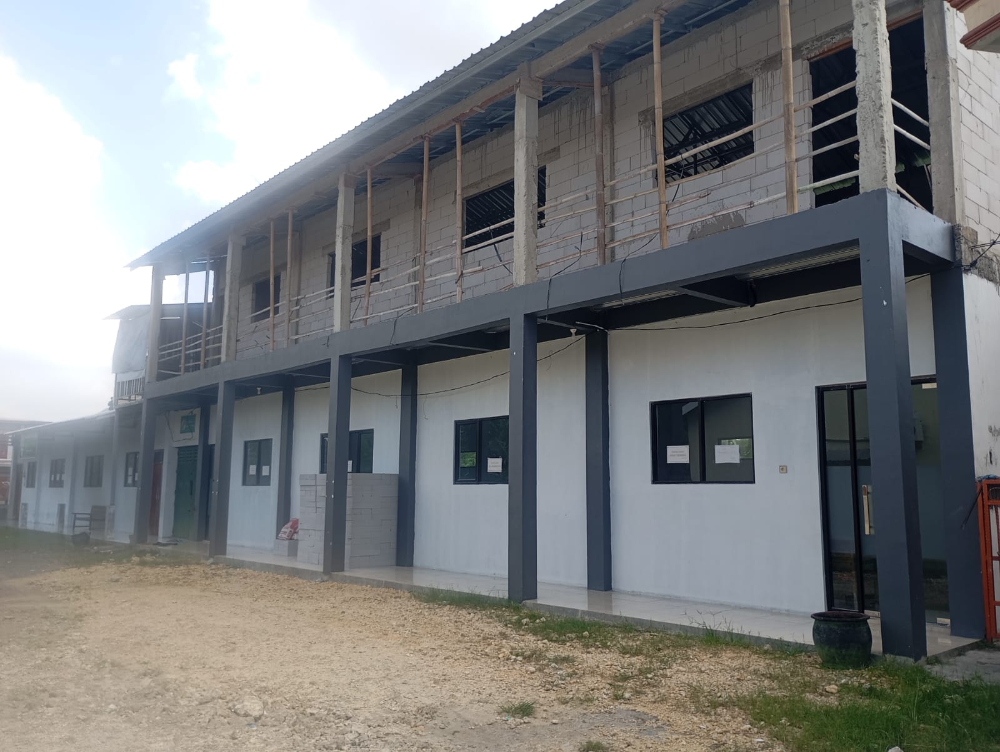
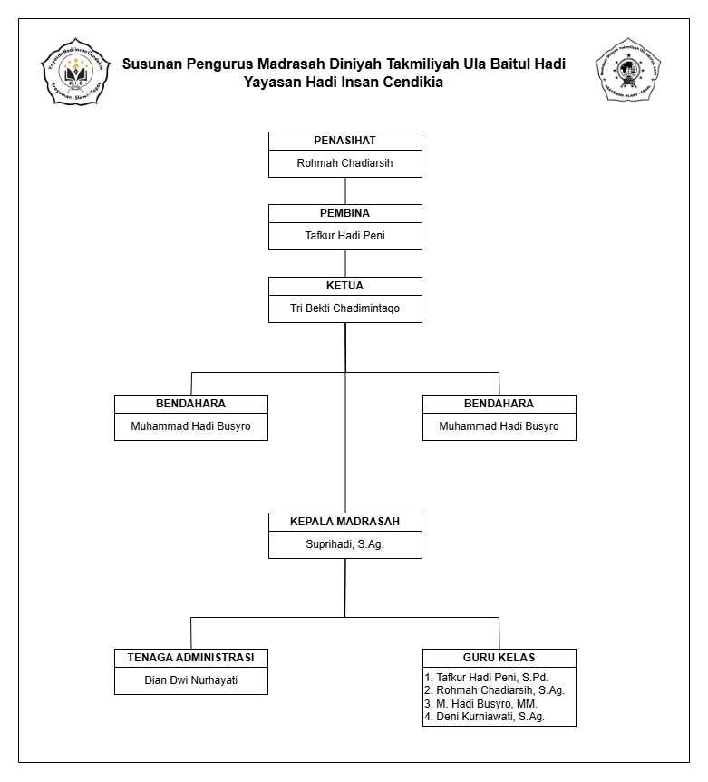

MDTU Baitul Hadi
Desa Trayeman, Kec. Slawi, Kab. Tegal
About
Lembaga Pendidikan Baitul Hadi merupakan lembaga pendidikan keagamaan Islam yang berdiri pada tahun 2020 di Desa Trayeman, Kecamatan Slawi, Kabupaten Tegal. Berdirinya Lembaga Pendidikan Baitul Hadi dilatar belakangi oleh keinginan masyarakat dan tokoh agama setempat untuk menyediakan pendidikan agama Islam yang terarah, terjangkau, dan berkualitas bagi anak-anak di lingkungan sekitar.

Aspirasi masyarakat ini didukung oleh keberadaan salah seorang tokoh masarakat yaitu Alm. H. Karnadi yang berwasiat kepada putra-putrinya untuk me-Wakafkan sebagian tanah peninggalannya untuk mendirikan sarana ibadah dan Pendidikan ke agamaan.
Pada awal tahun 2020, beberapa tokoh masyarakat, ustadz, dan keluarga yang mewaqafkan tanah bermusyawarah untuk mendirikan lembaga pendidikan Baitul Hadi yang mampu menjadi tempat pembinaan akhlak, ibadah, dan pengetahuan keislaman bagi generasi muda.
Dari hasil musyawarah tersebut, disepakati pendirian TPQ, RTQ Baitul Hadi dengan jumlah santri, tenaga pendidik, maupun sarana pembelajaran seadanya, berawal dari kegiatan yang di laksanakan di rumah H. Karnadi-Hj. Taslicha.
Pada masa awal berdiri, kegiatan belajar mengajar dilaksanakan secara sederhana dengan memanfaatkan ruang belajar seadanya serta dukungan swadaya masyarakat. Meskipun berdiri di tengah berbagai keterbatasan, semangat para pendiri, tenaga pengajar, dan wali santri tetap tinggi dalam mengembangkan pendidikan agama Islam di lingkungan Trayeman.
Sejak berdiri, Lembaga Pendidikan Baitul Hadi terus berkembang baik dari adanya Kurikulum yang diterapkan meliputi pembelajaran Al-Qur’an, aqidah akhlak, fiqih, sejarah kebudayaan Islam, bahasa Arab, serta praktik ibadah sehari-hari. Selain kegiatan belajar rutin, madrasah juga aktif mengadakan kegiatan keagamaan seperti peringatan hari besar Islam, lomba keagamaan, dan pembinaan akhlak santri.
Seiring berjalannya waktu, para orangtua santri TPQ menghendaki adanya Lembaga pendidikan yang bisa menampung kelanjutan dari TPQ. Awal tahun 2026, pengelola berusaha memenuhi keinginan masyarakat khususnya orang tua dan wali santri TPQ.
Berdirilah Madrasah Diniyah Takmiliyah Ula (MDTU) dengan nama “MDTU Baitul Hadi” yang memiliki makna “rumah petunjuk”, sebagai harapan agar lembaga ini menjadi tempat lahirnya generasi yang berilmu, beriman, dan berakhlakul karimah.
Bersamaan dengan itu, juga didirikan Yayasan untuk menaungi dan diharapkan bisa berkembang merintis lembaga pendidikan Islam lain, baik Formal maupun Informal. Yayasan itu di beri nama YAYASAN HADI INSAN CENDEKIA.
HADI bermakna pemimpin, pemandu, atau orang yang memberi petunjuk ke jalan yang benar, juga merupakan singkatan TASLICHA KARNADI
INSAN bermakna manusia sebagai makhluk mulia yang memiliki potensi jasmani dan rohani, berakal, jinak/harmonis (al-uns), serta pelupa (nasiya)
CENDIKIA : orang yang tajam pikiran, pandai, terpelajar, dan berilmu luas
Dengan dukungan masyarakat dan pengurus yayasan, MDTU Baitul Hadi Trayeman diharapkan terus menjadi lembaga pendidikan Islam yang mampu mencetak generasi Qur’ani, berakhlak mulia, serta bermanfaat bagi agama, bangsa, dan masyarakat.
Santri
Alumni
Pengajar
Visi & Misi
Madrasah Diniyah Takmiliyah Ula Baitul Hadi memiliki Visi & Misi tersendiri.
Visi
Menjadi Madrasah Diniyah Takmiliyah Ula yang terdepan dalam membentuk generasi berakhlak mulia, berwawasan luas serta berpegang teguh pada Al-qur'an dan Hadits
Misi
1. Menumbuhkan rasa cinta kepada Allah SWT dan Rosul-Nya
2. Menumbuhkan semangat belajar terhadap Pendidikan Agama Islam
3. Mampu melaksanakan ibadah dengan baik dan benar sesuai Al-Qur'an dan sunnah
Struktur
Struktur Organisasi MDTU disusun sebagai pedoman dalam pelaksanaan kegiatan pendidikan agar berjalan secara efektif, terarah, dan terkoordinasi. Setiap unsur dalam struktur memiliki tugas, tanggung jawab, dan wewenang yang saling mendukung untuk mencapai tujuan pendidikan madrasah.

Kegiatan

Pendaftaran
Dalam rangka membentuk generasi yang berakhlakul karimah, memahami ajaran Islam secara benar, serta mampu mengamalkan nilai-nilai keislaman dalam kehidupan sehari-hari, MDTU membuka kesempatan bagi putra-putri Muslim untuk bergabung sebagai peserta didik baru Tahun Pelajaran 2026/2027.

Melalui program pembelajaran yang terstruktur, peserta didik akan mendapatkan pendidikan agama Islam meliputi Al-Qur'an, Aqidah Akhlak, Fikih, Hadis, Sejarah Kebudayaan Islam, Bahasa Arab, serta pembinaan karakter Islami yang dilaksanakan oleh tenaga pendidik yang kompeten dan berpengalaman. Kegiatan belajar mengajar dirancang untuk mendukung perkembangan spiritual, intelektual, dan sosial peserta didik secara seimbang.
Kami mengundang para orang tua untuk mempercayakan pendidikan agama putra-putrinya kepada MDTU sebagai sarana memperkuat dasar keimanan dan ketakwaan sejak dini. Dengan lingkungan belajar yang kondusif dan bernuansa Islami, MDTU berkomitmen mencetak generasi yang cerdas, berakhlak mulia, dan bermanfaat bagi agama, bangsa, dan masyarakat.
Pendaftaran Peserta Didik Baru MDTU Tahun Pelajaran 2026/2027 telah dibuka. Segera daftarkan putra-putri Anda dan jadilah bagian dari generasi Qur'ani yang berilmu, beriman, dan berakhlakul karimah.
Link Pendaftaran https://bit.ly/BaitulHadiMDTUContact
Address
Jl. Kuda, RT.01/RW.03, Trayeman, Kec. Slawi, Kabupaten Tegal, Jawa Tengah 52414
Call Us
081575899374 (Ust. Tafkur Hadi Peni, S.Pd.)
087826431543 (Ustd. Deni Kurniawati, S.Ag)
Email Us
mdabaitulhadi@gmail.com